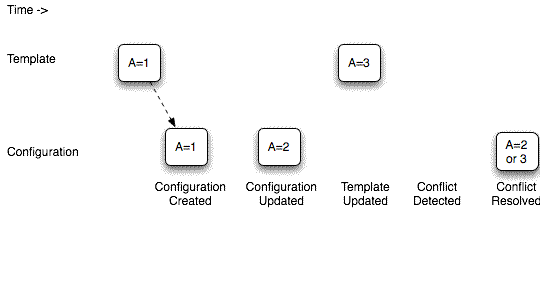

If the File > Enable Template Propagation menu item is enabled (not dimmed) you can enable or disable propagation of template changes by toggling the menu item. The menu item is dimmed if propagation is disabled in the template.
For a configuration to receive template updates, propagation must be enabled in both the configuration and its template.
The current configuration "remembers" which, if any, template it is based on. If a configuration is not based on a template, or is based on a template for which propagation is not enabled, File > Enable Template Propagation is dimmed.
If the template contains any values that are newer than the corresponding values in the configuration, the configuration values are replaced by the newer template values. There is one exception to this rule: a configuration property value or answer that the user has changed from the value of the template at the time the configuration was created. Such a case, in which both a template and a configuration value have been changed, is called a conflict. The configuration user resolves a conflict by choosing a value for the configuration property or answer. The following diagram shows how a conflict can arise, be detected and be resolved. In practice, conflicts rarely occur because configuration users do not often change values derived from a template. Changes to a configuration template propagate to configurations based on the template only if propagation is enabled in both the template and the derived configurations. 
Copyright © 2006, 2011, Oracle and/or its affiliates. All rights reserved.